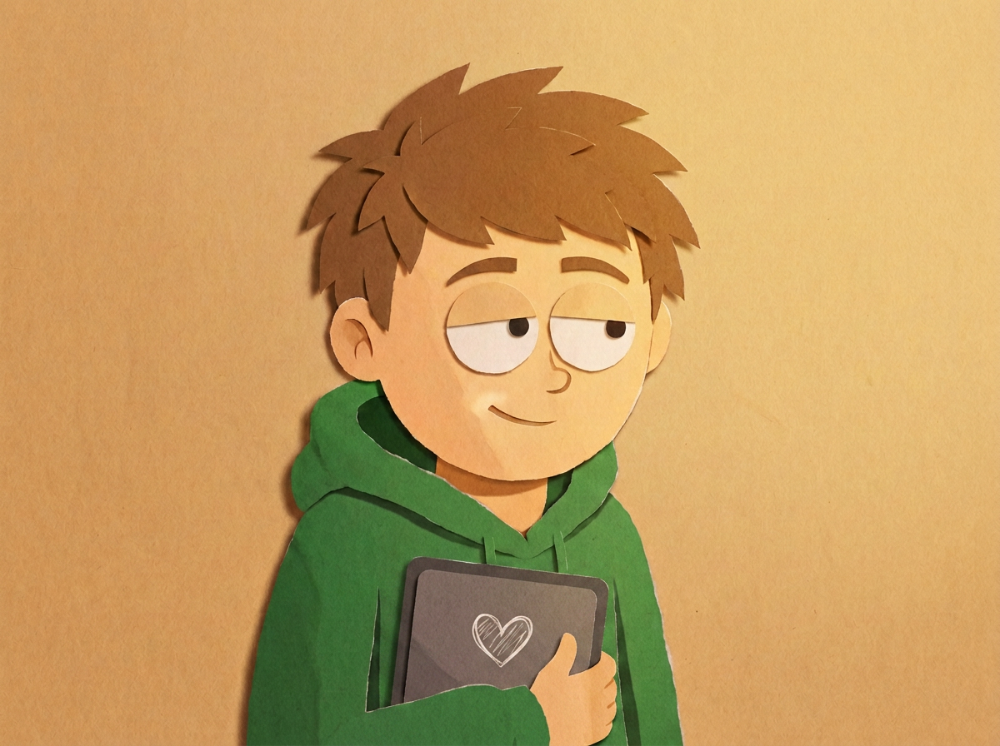

Команда
Четыре человека, один рабочий стол. Deploy по пятницам, кофе без остановки и AI в качестве со-фаундера.

Дима
«pixels > people»
Отвечает за то, чтобы сайт не выглядел как очередной шаблон. Рисует интерфейсы раньше, чем открывает Figma — и да, там обязательно будет котик. Кофе — литрами, вдохновение — рядом.

Илья
«deploy & pray»
Нажимает кнопку «Деплой» по пятницам, несмотря на надпись «DON'T DO IT», мигающую красным. Доводит прогресс-бар до 99% силой воли. Пока ни разу серьёзно не подвёл — почти.

Платон
«bug fixed! (probably)»
Официальный охотник на баги команды. После каждого коммита кричит «Пофиксил!», а через минуту тихо добавляет «наверное». Один коммит — один шаг вперёд.

Арсений
«код сгенерирован или наколдован?»
Разговаривает с нейросетями на «ты» и с первого взгляда отличает код человека от сгенерированного. Пишет книгу «Prompt Engineering для чайников» — обещает закончить после дедлайна.